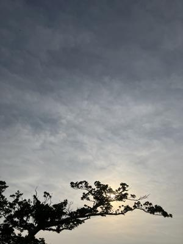
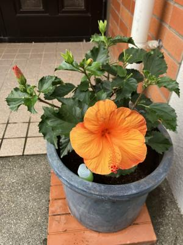

うるがいの話 ある日
最新: 法人化【うるがいの話 ある日】とは 一日だけのプログです
『うるがいの話』の最新一日だけのプログで、通信料が少なく経済的だ。カニの画像をクリックすると全ての日付が載る『うるがいの話』サイトを表示します
|
|
【うるがいの話】 うるがい(ｳﾙｶﾞｲ urugai)とは、『もずくがに』の名前でとても大きくなります。 |
|---|---|
|
|
【カミマヤーの話】 猫のことを方言でマヤーといいます。カミマヤー（kamimayaa）とは、神の猫のことです。 |
|
【たながぁの音楽】 たながぁ（ﾀﾅｶﾞｰ tanagaa）とは手長えびのことで、何種類かあり大きいのは車 エビぐらいになります。 |

|
【ぶながぁの話】 ぶながぁ(ﾌﾞﾅｶﾞｰ bunagaa)とは、赤い髪の毛、赤い身体、そして身長は１ｍ２０ｃｍ ぐらい、川の蟹を食べているの目撃された。場所は沖縄県国頭郡大宜味村のと ある村僕の隣近所に住んでいる爺さんから、聞いた話です。 |
|
|
【ギーマの話】 ギーマ(giima)とは、山原の里山に咲くスズランに似た、 花を付けます。実は食べられます、 気が付くと口の周りが紫になっています。 |
2025年06月01日 (日）法人化
16:28

『印鑑証明をスキャナーで取り込める？』、ウン、家のインクジェ
ットプリンター（ＣＡＮＯＮ ＰＩＸＵＳ ＴＳ８６３０）で出来
るよ。普通に取り込んだあとメールで画像を送ると解像度が６００
ｄｐｉでＰＤＦ、ん、早く言えよな。標準では、３００ｄｐｉで画
像（ｊｐｇ）なのだが、その筋のお父さんは、法務局の指示どおり
に対応した。オジィーは頼りになるだろう。個人事業だが、税金対
策のため法人化（従業員一人だが、代表取締役社長である）するた
めの作業らしい。

花は買わないと決めているのだが、オレンジ色のハイビスカス。数
年前にも、同じ色のがあったのだが値段が１，５００円、高い！と
躊躇している間に、売れて無くなっていた。この前、ヨメがオレン
ジ色のハイビスカスが、あった！と言っていた。
翌日、税込み９８０円で買いました。